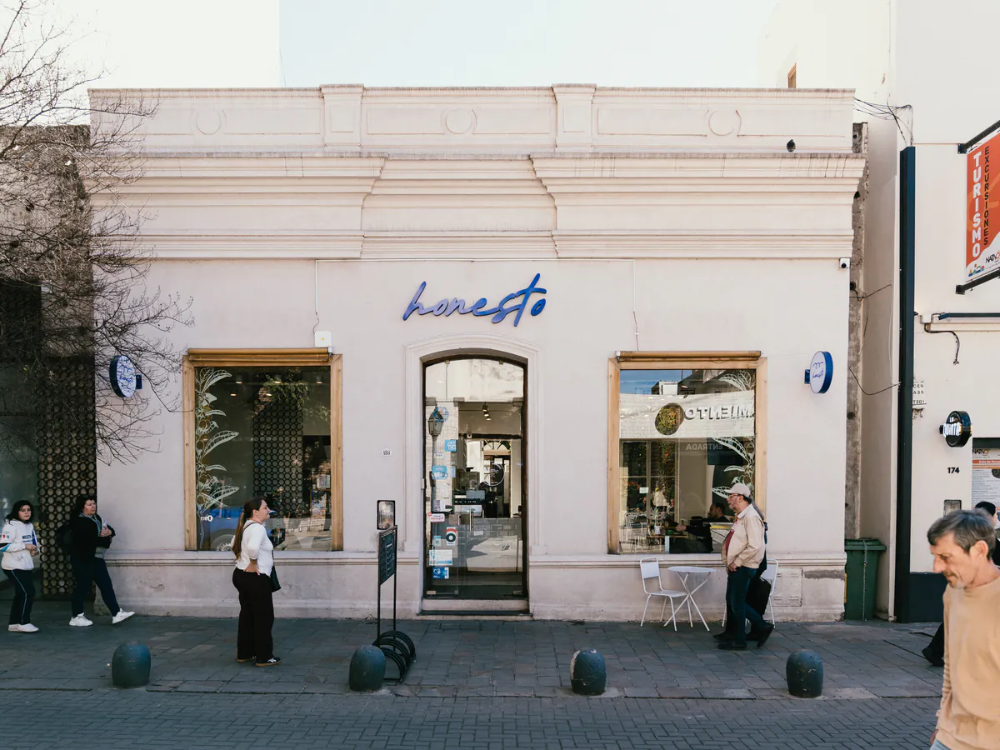

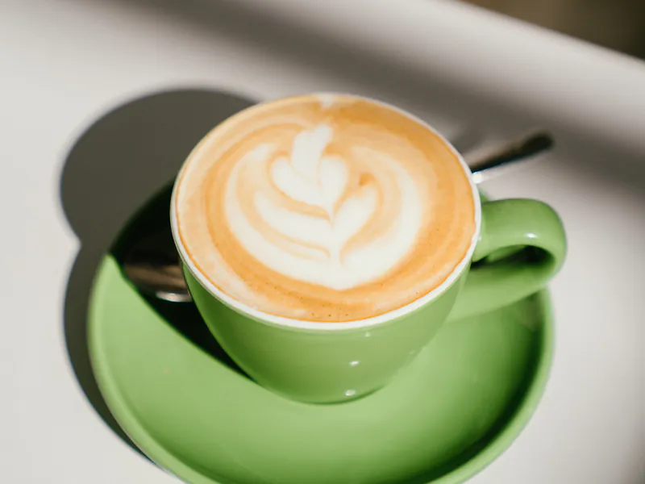
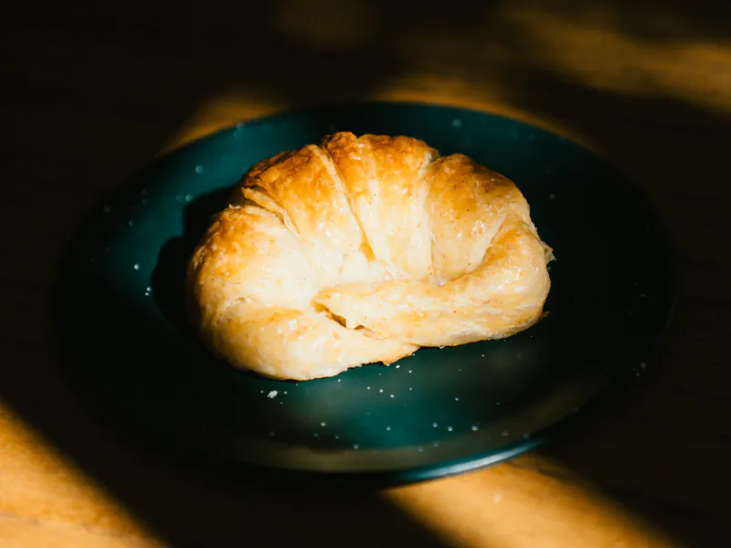
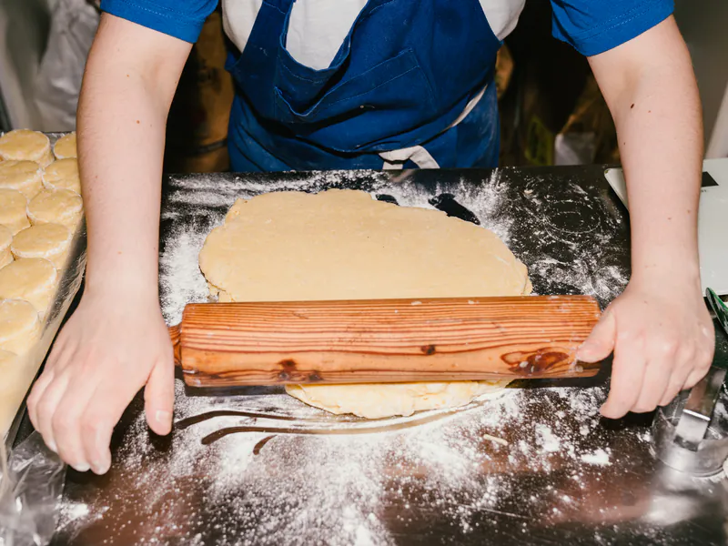
hogazas de masa madre real, café de especialidad bien preparado y producción propia en el centro de Córdoba. Sin pose, sin vueltas.
En pocas palabras
¿Qué es honesto?
honesto es una cafetería de especialidad y panadería de masa madre en Independencia 180, Centro, Córdoba, a pocas cuadras de la Plaza San Martín. Su producto principal es la hogaza de masa madre con 24 horas de fermentación natural. También hace laminados, pastelería y comida fresca de producción propia, y con honesto bakery abastece al por mayor a cafeterías y restaurantes de Córdoba.
- Dirección
- Independencia 180, Centro, Córdoba, Argentina
- Horario
- Lun–Vie 8:00–21:00 · Sáb 9:00–15:00 · Dom cerrado
- Teléfono / WhatsApp
- +54 351 601-6091
- @honesto.bakery
Honesto happenings
Lo de todos los días, bien hecho.
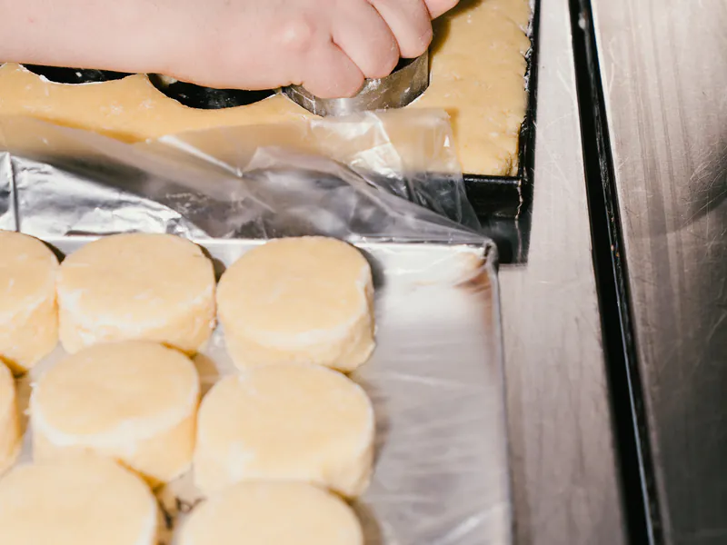
Amasar, esperar, hornear
Lo básico, hecho como corresponde. Todos los días.
Conocé nuestro proceso →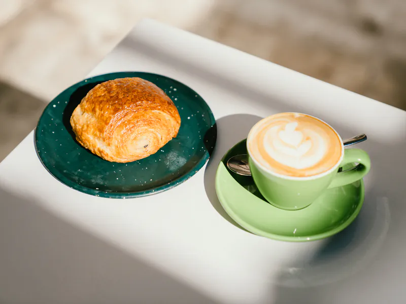
Carta de temporada
Ingredientes nobles, platos claros. Comer bien no tiene que ser un desafío.
Ver la carta →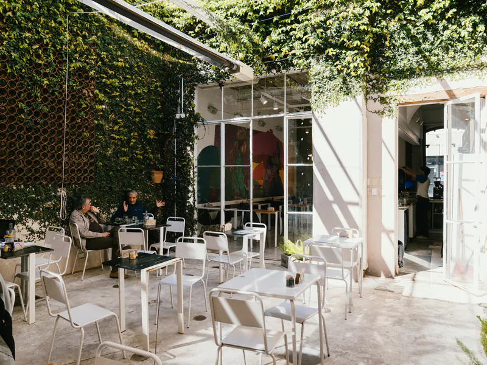
Un lugar para quedarse
Espacio cómodo para trabajar, estudiar, encontrarse o simplemente estar.
Visitanos →"Los libros, libres amigos,
que dicen verdades claras.”
La carta
Producto real. Sin pose.
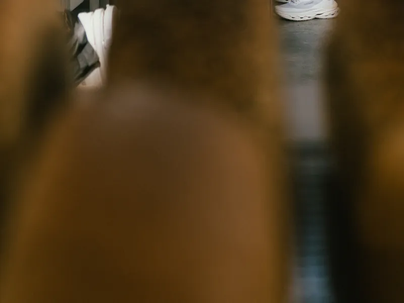
Fermentación de 24 horas
Nuestro producto principal. Harinas de trigo, integral y centeno, 24 horas de fermentación natural, sin levadura comercial. Corteza crocante, miga aireada. Horneada todos los días.
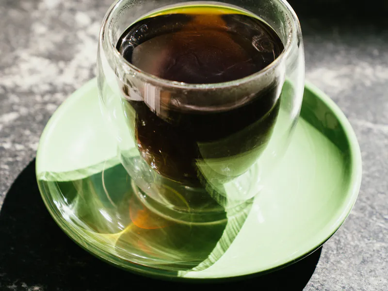
Calibrado todos los días
No hace falta saber de café de especialidad para notar la diferencia. Se nota en la taza.
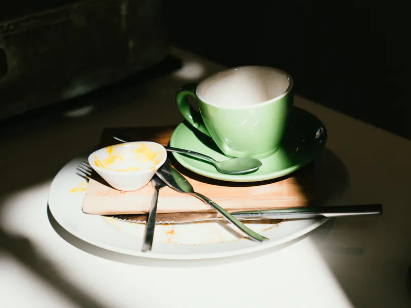
Rica y casera
Ingredientes nobles, preparaciones claras, porciones honestas. Comer bien no tiene que ser un desafío.

Las de siempre, bien hechas
Medialunas marplatenses, croissants, pan de chocolate, roll de canela y danesas. Masa madre y 100% manteca. Recién salidos.
la masa madre lleva tiempo. Por eso se nota.
No ocultamos procesos. Mostramos cómo trabajamos porque confiamos en lo que hacemos. La cocina es visible, el horno está a la vista y el café se calibra todos los días.
-
01
Fermentación
La masa descansa las horas que necesita. Sin apuro.
-
02
Producción propia
Cada pan sale de nuestra cocina. Sin terceros, sin atajos.
-
03
Masa madre real
Sin levadura comercial. La fermentación natural hace el trabajo.

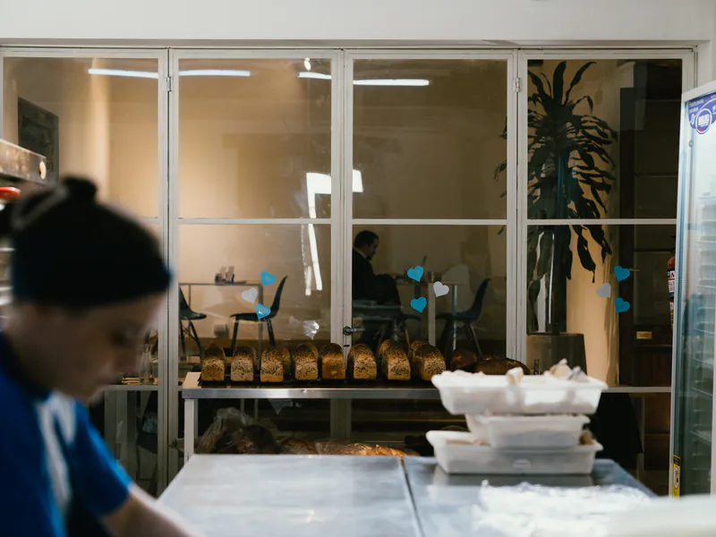
Calidad contemporánea. Identidad cordobesa.
En un mundo donde todo intenta parecer más de lo que es, donde cada café viene acompañado de un manifiesto y cada pan necesita una explicación épica, honesto elige que el protagonismo lo tengan el producto, el servicio y el oficio.
La masa madre es real. El café está bien calibrado. El horno se ve. El proceso no se esconde detrás de una estética calculada.
Coherencia
Lo que decimos es lo que servimos.
Maestría
El saber hacer que no se negocia.
Transparencia
Procesos visibles, confianza real.
Cercanía
Cerca sin invadir. Trato humano.
Preguntas frecuentes
Lo que nos preguntan seguido.
¿Dónde está honesto y qué horario tiene?
Estamos en Independencia 180, Centro, Córdoba, a pocas cuadras de la Plaza San Martín. Abrimos de lunes a viernes de 8:00 a 21:00 y los sábados de 9:00 a 15:00. Los domingos cerramos. Teléfono: +54 351 601-6091.
¿Dónde tomar café de especialidad en el centro de Córdoba?
Acá, en Independencia 180. Trabajamos con café de especialidad y lo calibramos todos los días para que salga igual de bien en cada taza. No hace falta saber de café para notar la diferencia.
¿Dónde comprar pan de masa madre en el centro de Córdoba?
Acá, en Independencia 180. Nuestro producto principal es la hogaza de masa madre: 24 horas de fermentación natural, sin levadura comercial, horneada todos los días en el local. Corteza firme, miga abierta y sabor real.
¿Qué laminados y pastelería tienen?
Medialunas de manteca estilo marplatense, croissants, pan de chocolate, roll de canela, danesas y pepa de membrillo, todo laminado con masa madre y 100% manteca. En pastelería: alfajor de chocolate y frutos rojos, budines y cookies, una de ellas con receta sin gluten (con posible contaminación cruzada, no apta para celíacos). Producción propia, horneado el mismo día.
¿Hacen desayunos y almuerzos?
Sí. Abrimos a las 8:00 con medialunas recién horneadas, pan de masa madre y café de especialidad. Al mediodía hay comida fresca de producción propia, para comer acá o llevar.
¿Se puede trabajar o estudiar?
Sí. Es un espacio cómodo y luminoso, pensado para quedarse: trabajar, estudiar, reunirse o simplemente estar un rato.
¿Venden pan de masa madre al por mayor?
Sí. honesto bakery es nuestra unidad mayorista: hogazas y panes de molde de masa madre, laminados de manteca, pastelería y congelados para hornear en packs de 10, para cafeterías, restaurantes, hoteles y tiendas de Córdoba. Pedís por WhatsApp o registrás tu negocio.
Nos vemos mañana
elegí bien hecho.
Pasá antes de la oficina. Lo de todos los días también puede estar bien hecho. Buen café, buen pan y una mesa para arrancar mejor.
Menos show, más producto.